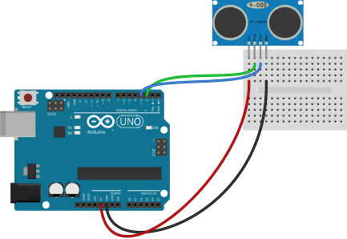
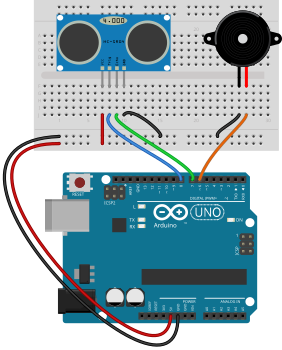
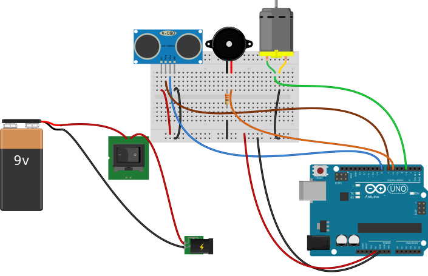

Ultrasonic Sensor (HC-SR04)
अल्ट्रासोनिक सेन्सर
Measures distance by sending ultrasonic pulses and timing the echo. Range roughly 2 cm–400 cm.
What it does · के गर्छ
Measures distance by sending ultrasonic pulses and timing the echo. Range roughly 2 cm–400 cm.
Pins on the component · कम्पोनेन्टका पिन
| Pin | Type | Role |
|---|---|---|
| VCC | Power | 5 V |
| GND | Ground | — |
| Trig | Input | Trigger pulse |
| Echo | Output | Echo pulse length |
Connect to Arduino Uno · UNO मा जडान
Example wiring (you may use other pins if you update the code). See Uno pinout.



Arduino code you need · आवश्यक कोड
Example use case · उदाहरण
Back-up alarm — Beep buzzer when distance is less than 15 cm.
const int trigPin = 2, echoPin = 3;
void setup() {
pinMode(trigPin, OUTPUT);
pinMode(echoPin, INPUT);
}
void loop() {
digitalWrite(trigPin, LOW);
delayMicroseconds(2);
digitalWrite(trigPin, HIGH);
delayMicroseconds(10);
digitalWrite(trigPin, LOW);
long cm = pulseIn(echoPin, HIGH) / 58;
if (cm > 0 && cm < 15) tone(5, 1000, 200);
delay(100);
}